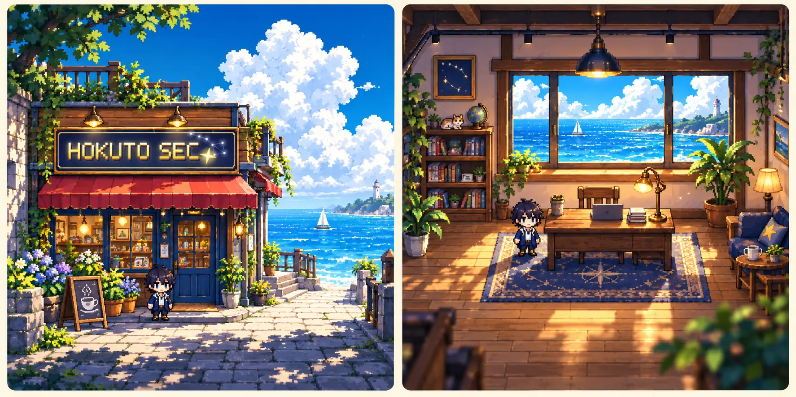
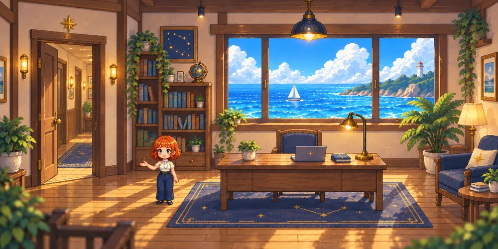

Day 07 · 화면의 뼈대
모바일 우선, 첫 화면의 핵심, 시각 위계, 정렬과 여백을 가져옵니다.
북두 적용: 375px에서 1열로 시작하고, 작은 가게 → 결정실·보유 확인 → 전체 안내도·오늘의 변화 → 뉴스 제목 순서로 읽습니다. 반복 메뉴는 하단에 배치합니다.
북두증권 모바일·PC 그래픽 기획서
전체 방은 한눈에, 종목의 판단은 끊김 없이. 아래 1~5번 완료 목록에서 바뀐 화면을 직접 눌러보세요.


이 액자 안에서만 세로 스크롤됩니다. 실제 휴대폰 경험은 예시 화면을 직접 열어 확인하세요. 화면 폭 선택값이 현재 기획서 폭보다 크면 들어갈 수 있는 폭까지만 표시됩니다. 200%는 글자 확대 점검용이며, 실제 브라우저 확대와 완전히 같지는 않습니다.
기존 기획을 이어서 다듬었습니다. 아래의 ‘시안 반영’은 공개 예시의 구현 상태입니다. 실제 북두 운영 연결은 별도이며 모든 종목·수치는 가상입니다.
모바일에 9개 방의 작은 안내도, PC에 항상 보이는 왼쪽 안내도를 넣었습니다. 결정실·보유 확인·하루 변화가 긴 뉴스 목록 앞에 옵니다. 하단 다섯 메뉴와 바닷가 그림은 유지합니다.
확인: 방마다 ‘무슨 일을 하는지’ 보이고, 누르면 해당 방이 열립니다.
결정실 네 근거와 EPS, 트레이딩의 선정·가격·신호·아침 확인·보유·계좌 상태, 보유 경고와 추가 검토를 나눴습니다. 신호 없음·돌파·보류·제외·미입력·이미 보유한 후보를 모두 시연합니다.
확인: 신호가 있어도 계좌 미확인이 남고, 매수한 것으로 기록되지 않습니다.
가상 종목 코드·보는 테마·다른 소속 테마·판정 기준일을 함께 표시합니다. 리서치 상세와 테마뉴스 상세를 분리하고, 뒤로 가면 직전 화면의 필터·위치로 돌아갑니다. 보유 H는 신규매수 대상과 분리됩니다.
확인: 소재 테마의 A를 열어 판정·타이밍·기록을 눌러도 A·소재·10/09 기준이 유지됩니다.
TOP6를 테마 순위로 통일했습니다. 돈몰림 20일·60일 기준, 최근 24시간 뉴스와 별도 제안인 주간 비교, 시장 대비 성과와 동일 테마 대비 선정성적을 구분합니다.
확인: TOP6 밖 냉각 테마의 D 후보도 자기 경로를 유지합니다. 평가 대기를 0%로 채우지 않습니다.
뉴스 게시판, 리서치 비교표, 펀드매니저 검증표, 결정실 판정판, 트레이딩 차트, 사장실 변화 게시판, 기록실 수첩으로 구분했습니다. 명패와 입구의 그림·색도 이어집니다.
확인: 사장실에는 테마 순위와 후보 진입·이탈, 판정 변화가 함께 있습니다. BNF는 별도 전략입니다.
필수: 1~4번의 전체 안내·정보 구분·이동·용어 정정. 선택: 5번의 방별 작은 개성은 기존 그림과 CSS로 반영했습니다. 이번에는 불필요: 새 입장 페이지, 대형 애니메이션, 운영 판정 계산 재작성. 주간 뉴스 이력은 새 자료가 필요한 별도 기능입니다.
코드: 70개 가상 화면의 링크·종목 문맥·판정 구분·보유 분기·평가 범위·뉴스 제목 전체 검사 통과. 72개 화면·문서 HTML 구조와 JavaScript 문법 검사 통과.
공개 브라우저: 소재 테마 A의 유입 근거→레인→판정→타이밍→기록, H의 보유관리 분기, 기사 필터·읽던 위치 복귀, 리서치 목록 복귀, 차트 20/60거래일·날짜 이동을 확인했습니다. 320px·글자 200%에서 결정실 C·트레이딩 D·보유 H·검증표·선정성적의 가로 잘림이 없었고, 375·430px 판정판과 PC 안내도 배치를 확인했습니다.
범위: 실제 iPhone Safari 터치 검수와 운영 데이터 연결은 별도입니다. 이번 완료는 기획서와 가상 디자인 예시이며, 운영 계산·판정·알림은 바꾸지 않았습니다.
이전 시안에 약했던 결정실의 역할을 중심에 놓습니다. 현재 북두의 판단 순서를 살리며, 공개 화면에서는 가상 자료로 이동과 설명을 보여줍니다.
① 결정실 근거 네 칸을 바로 보여주기 ② 같은 종목을 따라 뉴스·레인·판정·차트·기록 이동하기 ③ 방마다 작은 그림 명패 달기. 추가로 종목 이름표의 ‘테마·레인·결정실’ 표시와 현재 위치를 통일하고, 전체 목록의 방 입구에도 안쪽과 같은 그림·색·테두리를 적용했습니다. 가상기업 A로 처음부터 기록까지 눌러볼 수 있습니다.
가게에서 바로 오늘을 시작합니다.
작은 가게와 안내원 아래에 종목별 판정으로 가는 길을 먼저 둡니다. 리서치·펀드매니저·하루 변화도 바로 열 수 있게 합니다. 첫 방문 입장 화면은 없습니다.
매일 전체 제목을 훑어봅니다.
시간순 목록에서 제목을 자르지 않습니다. 테마뉴스의 관심 변화와 리서치의 실제 돈몰림을 비교하고, 상세에서 돌아오면 읽던 위치를 유지합니다.
TOP6 진입·이탈만 보지 않습니다.
돈몰림 추천테마와 TOP6 테마를 각각 확인하고 구성 종목을 엽니다. 같은 종목의 A·B·C·D 레인과 대표 선정 여부까지 봅니다. TOP6 밖에서 온 D 종목도 자기 경로를 유지합니다.
종목마다 무엇이 달랐는지 확인합니다.
종목 → 판정 → 한 줄 이유 → 시장행동·실적·촉매·반대근거 네 칸 → 다음 확인 → 타이밍 버튼 순서로 보여줍니다. 근거 네 칸은 접지 않습니다. A·B·C 종목은 대표가 아니어도 들어옵니다. D만 충족하고 대표가 아닌 종목은 ‘결정실 미입력’으로 구분합니다.
트레이딩은 차트 이상의 역할입니다.
결정실의 ‘매수대상’에서 트레이딩의 회복·돌파 등 기존 타이밍 판정을 확인합니다. 매수 대상으로 뽑혀도 ‘신호 없음’일 수 있습니다. 차트와 뉴스 근거를 함께 읽습니다.
읽기는 단정하게, 표정은 귀엽게.
가게·안내원 말풍선·작은 픽셀 별을 유지합니다. 방 입구에는 신문·지도·서류가방·판정판·차트·책 같은 작은 선 그림과 명패를 붙입니다. 종목 통과를 게임 보상처럼 꾸미지 않고, 안내원을 눌렀을 때만 짧은 도움말과 별 반응을 보여줍니다.
트렌드를 모두 섞지 않습니다. 모바일에서의 정보 순서와 일관된 부품을 우선합니다.
모바일 우선, 첫 화면의 핵심, 시각 위계, 정렬과 여백을 가져옵니다.
북두 적용: 375px에서 1열로 시작하고, 작은 가게 → 결정실·보유 확인 → 전체 안내도·오늘의 변화 → 뉴스 제목 순서로 읽습니다. 반복 메뉴는 하단에 배치합니다.
글자 크기, 명도 대비, 버튼 상태, 이미지 비율, 빈 화면과 오류 표시를 가져옵니다.
북두 적용: 그림 위 긴 글을 없애고 단색 읽기 영역을 둡니다. 카드·버튼·날짜 표시를 통일하고, 확대해도 내용이 잘리지 않게 합니다.
수업의 12컬럼·60:30:10·시선 패턴은 참고 도구입니다. 모바일에 12칸을 억지로 만들거나 모든 사용자에게 같은 시선 경로를 가정하지 않습니다. 아래 수치는 이 서비스에 맞춘 설계값입니다.
각 방이 같은 종목을 이어 보여줍니다. 앞에서 본 근거를 잃지 않고, 결정실과 트레이딩을 오갈 수 있게 합니다.
작은 가게 뒤에 결정실·보유 확인, 전체 안내도, 주요 변화와 안내원 한 줄이 이어집니다. 뉴스 제목 전체도 오늘 화면에서 읽습니다. 사장실 하루 변화는 전 거래일과의 차이를 정리하는 길로 남깁니다.
분석 대기 기사도 숨기지 않습니다. 테마뉴스는 최근 24시간 사건과 회사 영향을, 돈몰림은 20일·60일 기준을, TOP6 순위 변화는 전 거래일 대비를 봅니다. 주간 비교는 별도 자료 개발 제안입니다. 뉴스 증가만으로 자금 유입이나 미래 인기를 단정하지 않습니다.
돈이 먼저 들어온 추천테마와 TOP6 주도테마를 나눠 봅니다. 새 진입·이탈뿐 아니라 간판·대장·관련 종목을 엽니다. TOP6는 종목 순위가 아니라 테마 순위입니다.
A·B·C·D 조건과 대표 선정 여부를 함께 봅니다. B·D처럼 복수 레인은 유지합니다. 결정실에는 A·B·C 종목 전체와 운영 D 대표가 들어갑니다. D만 충족하고 대표가 아닌 경우는 미입력입니다.
목록에서는 종목·매수대상/보류/제외·핵심 이유를 읽고, 상세에서는 판정 바로 아래 네 가지 근거를 펼쳐 보고 다음 확인과 타이밍으로 갑니다. 테마·레인 등 유입 경로는 같은 종목 메뉴로 되짚습니다. 동행·촉매 등 설명 유형은 최종 판정 아래에 둡니다. 미입력과 판정 결과는 섞지 않습니다.
매수 타이밍 → 신호 상태 → 이유 → 다음 확인을 먼저 읽습니다. 이어 종가·25일선·거래량 차트와 날짜별 수치를 봅니다. 결정실 판정과 타이밍 상태를 함께 보여주되, 별개의 결과로 유지합니다.
A의 신호 없음, D의 돌파, E의 제외, H의 보유 후 경고까지 종목별 관찰 수첩에서 이어 봅니다. 평가 기준은 시장 대비와 동일 테마 대비로 나눕니다. 매수대상 선정을 실제 매매로 기록하지 않으며, 이후 가격과 수익률은 만들어 채우지 않습니다.
기사·종목·차트·판정 시연은 모두 가상입니다. 예를 들어 ‘매수대상’이면서 ‘신호 없음’인 경우, D만 충족하고 대표가 아니어서 결정실 판정이 없는 경우를 따로 보여줍니다. 공개 예시가 운영 판정을 계산하거나 계좌와 연결하는 것은 아닙니다. 위에서 직접 눌러보기 ↑
모든 화면에서 같은 기준을 씁니다. 배경의 픽셀 질감과 데이터의 글꼴은 역할을 나눕니다.
이름과 결정실 상태를 먼저 보고, 그 아래에서 테마와 레인을 읽습니다. 목록·유입 근거·레인·결정실·차트·기록·회사 기사에 같은 표시를 씁니다. 방 색상이 바뀌어도 이 이름표의 색과 판정 의미는 바뀌지 않습니다.
같은 종목 메뉴에는 이름을 반복하고, 현재 보는 위치에 ‘현재’를 붙입니다. 회사 기사는 유입 근거의 ‘기사 읽는 중’으로 표시합니다. 내 주식은 ‘보유 중’ 표시와 보유관리 메뉴로 구분합니다. H의 A레인 비대표·결정실 매수대상 상태와 보유 후 경고를 다른 시점의 정보로 보여줍니다.
전체 목록의 입구와 방 안의 명패는 같은 물건 그림·옅은 색·테두리를 공유합니다. 방마다 큰 배경을 새로 넣지 않고 작은 문패에서 성격을 보여줍니다.
뉴스룸은 신문, 테마뉴스는 게시판, 리서치는 지도, 펀드매니저는 서류가방, 결정실은 판정판, 트레이딩은 모니터, 기록은 책, 사장실은 작은 관람차, BNF는 신호 계기입니다. 성과기록은 장부, 선정성적은 성적표로 구분합니다.
카드는 기존 바다색의 가는 선으로 배경과 구분합니다. 금색은 작은 본문에 쓰지 않습니다. 상승·하락 색은 기존 북두의 의미를 유지하고, 상태는 글자와 기호를 함께 표시합니다.
본문은 17px, 줄 간격은 1.65배입니다. 한 문단에 하나의 요점을 담습니다.
자료 기준 · 가상 시각 예시 · 14pxCSS는 rem과 최소 높이를 사용합니다. 크게 읽기·브라우저 확대를 허용하고, 긴 이름이나 큰 글자에서는 카드 높이가 늘어납니다.
현재 예시는 기존 라운지 그림을 가볍게 변환해 사용합니다. 안내원은 그림에 포함된 상태입니다. 따로 움직이게 할 때에만 배경과 캐릭터를 분리 제작합니다.
매일 가게는 기존 원본의 왼쪽 장면을 모바일에서 88px 높이로 표시합니다. 라운지는 공간 보기에서, 안내원은 작은 말풍선 초상으로 활용합니다. 문이 잘려도 이동 버튼은 독립적으로 보입니다. 글자를 그림 안에 굽거나 인물 전체를 확대해 억지로 채우지 않습니다.
고전 2D RPG를 떠올리는 가게·안내원·직접 만든 픽셀 별을 사용합니다. HD-2D의 깊이감은 기존 그림과 얕은 그림자로 가볍게 표현합니다. 명패 그림은 44px 영역에 놓고 방 이름을 글자로 함께 씁니다. 장식 그림만으로 방을 구분하게 하지 않습니다. 안내원을 눌렀을 때만 별이 한 번 반응합니다. 자동 음성·자동 대사 넘김은 없습니다.
동작 줄이기에서는 장식 동작을 멈춥니다. 첫 화면 그림은 250KB 이하를 목표로 하고, 크기를 미리 지정해 로딩 중 버튼이 밀리지 않게 합니다.
결정실 부품: 종목 이름 24.8px, 근거 설명 14px, 근거 칸은 2열입니다. 글자 200%에서는 근거를 1열로, 종목 이동 메뉴를 2열로 바꿉니다. 미입력의 네 칸에는 ‘심사 전’을 표시하고, 보류·매수대상의 심사 결과를 복사하지 않습니다.
폭별 배치: 320~767px는 한 열. 768~1023px는 넓은 한 열과 일부 2열 카드. 1024px 이상에서는 왼쪽 전체 안내도와 오른쪽 읽기 영역으로 나눕니다. PC 안내도는 스크롤 중에도 남고, 모바일에는 오늘 화면의 작은 안내도를 표시합니다. 하단 메뉴 다섯 개는 공통입니다.
화면에 자료가 없을 때 이유가 보여야 합니다. 시간·상태를 디자인의 일부로 다룹니다.
내용·기준 시각·근거 링크. 실제로 계산된 수와 상태를 표시합니다.
자리 표시와 짧은 안내. 로딩을 내용이 없는 상태로 오해하지 않게 합니다.
정상적으로 자료를 확인했을 때만 사용합니다. 작은 안내원 얼굴과 함께 기존 종목·기록으로 이동합니다. 풍경 전체를 반복하지 않습니다.
다시 불러오기와 마지막 자료 보기. 사용자에게 오류 코드를 해석하게 하지 않습니다.
실제 자료 기준 시각을 바로 붙입니다. 페이지를 연 시간을 자료 갱신 시각으로 쓰지 않습니다.
분석된 것만으로 전체를 확인했다고 말하지 않습니다. 중요한 미확인은 요약에서도 보이게 합니다.
현재 예시의 상태 전환은 가상 동작입니다. 운영 단계에서는 기존 결과에 실제 있는 상태만 연결하고, 없는 상태를 추정해서 만들지 않습니다.
이번 산출물은 1~5번 수정 기획서와 모바일·PC 가상 화면 예시입니다. 실제 계좌·서버·자동매매에는 연결하지 않았습니다.
뉴스 전체·테마 비교·차트·하루 변화와 작은 픽셀 반응을 유지합니다.
자료 부족·미입력을 ‘제외’로 바꾸지 않습니다. 디자인에서 새 투자 신호를 계산하지 않습니다.
관심 증가는 관찰 이유이며 미래 인기의 확정 예측이 아닙니다.
그래픽 후속 범위: 내 주식의 경고·추가 검토·수량·평단·손익 표시 자리, BNF의 조건표, 성과기록과 선정성적의 비교 기준을 시안에 반영했습니다. 실제 계좌·가격·성과·BNF 신호는 미연결입니다. 모든 방의 실데이터 연결을 마친 버전이 아닙니다.
작은 바닷가 가게에서 바로 오늘을 시작합니다. 뉴스와 테마를 비교한 뒤 추천테마·TOP6의 구성 종목과 레인 정보를 확인합니다. 기존 입력 범위의 결정실 판정에서 트레이딩 타이밍까지 같은 종목으로 이어지게 만듭니다. 판정 결과를 눈에 잘 띄게 하되, 원인과 미확인도 가까이에 둡니다. 본문은 일반 글꼴, 장식은 작은 픽셀 요소로 유지합니다.
뉴스·테마·레인·결정실·트레이딩에서 같은 종목을 보고 있는지, 서로 다른 결과가 섞이지 않는지 확인합니다.
이전 버전 기록 · 10/12 종목 표시·방별 개성: 공통 이름표, 회사 기사 이동 메뉴, 방 입구와 명패를 함께 보완했습니다. 48개 화면 생성과 기존 판정·차트 자료 보존을 확인했습니다. 공개 화면에서 A의 다섯 상세 화면 이름표와 ‘현재’ 표시, 회사 기사의 ‘기사 읽는 중’ 메뉴를 확인했습니다. 전체 목록과 결정실 A는 320·375·430px 프레임에서, 전체 목록·결정실 A·유입 근거·회사 기사는 320px·글자 200%에서 가로 넘침이 없었습니다. 입구와 안쪽 그림 일치도 확인했습니다. 방 이름의 글자 대비는 배경과 4.5:1 이상으로 조정했습니다. 실제 iPhone Safari 터치 검수는 별도입니다.
이전 버전 검수 · 2026-10-12: 소스에서 48개 가상 화면의 생성·종목 연결을 확인했습니다. 근거 네 칸, 매수대상·보류·미입력 구분, 제외 0건, 기사 복귀, 뉴스 제목 8개, 차트 기간·날짜 선택을 점검했습니다. 공개 화면에서 A의 유입 근거 → 레인 → 판정 → 타이밍 → 기록과 후보 메뉴의 판정 목록 직접 연결을 확인했습니다. 결정실 A는 320·375·430px 프레임에서 가로 넘침이 없었고, 320px·글자 200%에서 결정실 A/C·유입 근거·레인·차트·기록의 가로 넘침이 없었습니다(프레임 안 내용 폭 305·360·415px). 하단 메뉴보다 본문 아래 여백이 크게 확보되는 것도 확인했습니다. 실제 iPhone Safari 터치 검수는 미실시입니다.
이전 버전 검수 기록 · 2026-10-11: 오늘 → 결정실 목록 → 종목별 근거 → 같은 종목의 트레이딩 타이밍과 복귀를 확인했습니다. 매수대상·보류·미입력 및 제외 0건 필터, 추천테마 → 구성 종목 → 판정, 판정 근거 기사 → 원래 종목 복귀가 동작했습니다. 뉴스 제목 8개를 유지했고 36개 가상 화면의 링크·판정 구분을 검사했습니다. 320·375·430px 프레임에서 확인한 화면과 320px의 글자 200%에서 가로 넘침은 없었습니다(내용 폭 305·360·415px). 실제 아이폰 검수는 미실시입니다.
결정실 판정명·심사축·입력 범위는 현재 저장소 소스로 대조했습니다. 기획 보완: 2026-10-13. 전체 안내·실제 정보 구조·같은 종목 이동·용어·방별 배치의 1~5번을 반영했습니다. 결정실 근거 네 칸과 기존 그림은 유지했습니다. 실제 북두의 리서치·펀드매니저·결정실·트레이딩·놀이공원 역할을 바탕으로, 사용자가 매일 확인하는 순서를 보완했습니다. 레이아웃·색·치수·메뉴 구성은 수업 내용을 북두에 적용한 2차 제안입니다. 수업이 이 특정 배치를 검증했다는 뜻은 아닙니다. 1차 문서와 채택 이미지 원본은 보존합니다.